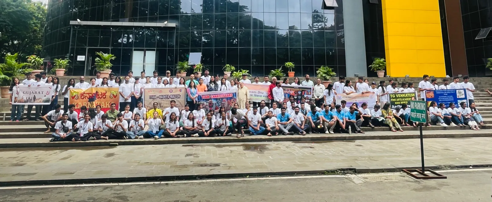
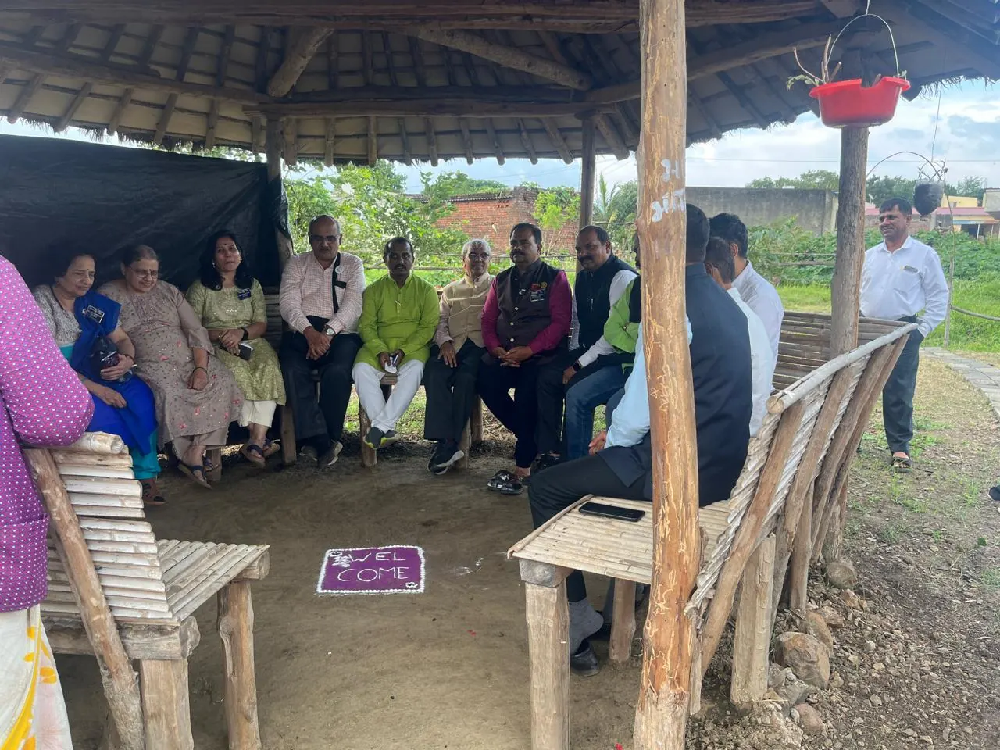
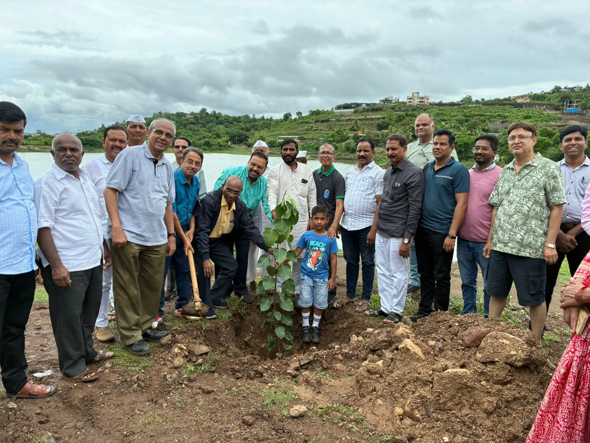
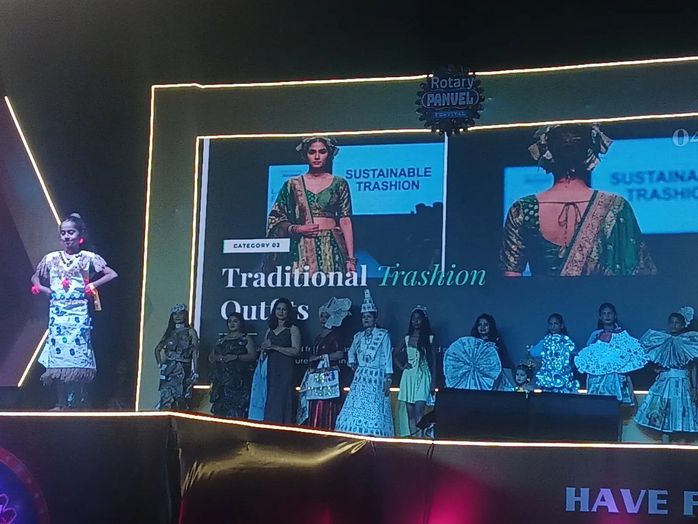
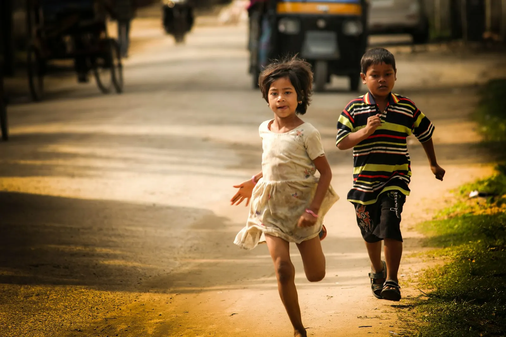
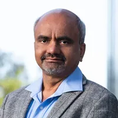
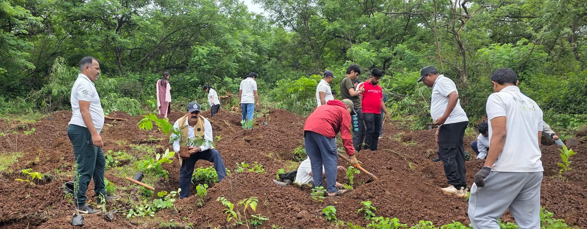

A cleaner planet. A good education for every child.
Who we work with

Our founders’ field work with local, regional, national and international organisations like Rotary and the Environmental Club of India, 2025-26 (before Zero Cube was formed)SchoolsGreener schools, better learning
See more →
Our founders’ field work with local, regional, national and international organisations like Rotary and the Environmental Club of India, 2025-26 (before Zero Cube was formed)VillagesFree for every village
See more → Representative image, not Zero Cube projects or peopleBusinesses (MSMEs)
Representative image, not Zero Cube projects or peopleBusinesses (MSMEs)Save energy. Win big buyers.
See more → Representative image, not Zero Cube projects or peopleNPOs
Representative image, not Zero Cube projects or peopleNPOsShow your impact in rupees
See more → Representative image, not Zero Cube projects or peopleIndividuals
Representative image, not Zero Cube projects or peopleIndividualsYour own green pledge
See more →Small habits. A better world.
Simple habits today. A liveable planet for the next generation.

Earlier community work by our founders, 2025 (before Zero Cube was formed)Cuts carbonSustainable living
Save water, switch off, plant a tree
Our founders’ field work with local, regional, national and international organisations like Rotary and the Environmental Club of India, 2025-26 (before Zero Cube was formed)Cuts wasteCircular economy
Reuse, repair, recycle, compost
Representative image, not Zero Cube projects or peopleWhat you gainHealthy living
Clean air, water and foodHow we certify Net Zero
Measure. Cut. Balance. Prove.
- MeasureFind where your carbon comes from.
- CutReduce it as much as you can.
- BalanceMake up for what’s left with real removals, like trees.
- ProveExperts check the data, then we certify.
Guided by our Advisory Board
Experts who guide our frameworks, audits and field work.
Dr. Mohan Dagaokar
Former City Engineer, Navi Mumbai Municipal Corporation (NMMC)
Urban Development and Environmental InfrastructureFormer City Engineer of Navi Mumbai, he led green urban infrastructure, water supply and public works across the city. He now advises on urban development and environmental infrastructure.
Dr. (Ar.) Anshul Gujarathi
Founder and Director, Eco Solutions
Green Buildings and Sustainability ReportingA green architect with over two decades in green design, sustainability reporting and low-carbon building. She makes the case that green buildings can cost no more, and champions ESG readiness.

Dr. N S Raman
Director, Center for Environment Sustainability Governance (ESG), St. Vincent Pallotti College of Engineering & Technology
Environmental Auditing and Pollution ControlAn environmental engineer and former Senior Scientist and Head of Division at CSIR-NEERI, known for pioneering work in environmental auditing and pollution control. He now leads Pallotti’s Center for ESG.

Dr. Jayant Keskar
Founding Director and CEO, Enpro Envirotech Pty Ltd, Australia
Waste to Resource, Biogas and CompostingAn environmental management expert with a PhD in Microbiology and over three decades in resource recovery, biogas and carbon reduction. He pioneered fast food-waste composting systems such as FOODIE.
Dr. Mangesh Kashyap
CEO and Founder President, SEERAM – Environmental Sustainability Research Foundation
Ecological Economics, Water and Green AuditsAn environmental economist with a PhD in Ecological Economics, he leads SEERAM, a not-for-profit for sustainability. He champions water resource management, green audits and the SDGs.
Dr. Ratnadip R. Joshi
Associate Director, Green Hydrogen and New Energy Research Centre, MIT-WPU, Pune
Green Hydrogen and Bio-CNG from Farm WasteA chemical engineer (PhD, Savitribai Phule Pune University and CSIR-NCL) and certified energy auditor. His research focuses on low-cost green hydrogen and turning farm waste into Bio-CNG.
Our advisors guide and advise us. They do not certify, verify or endorse any Zero Cube certificate. The organisations named are their own roles, not partners of Zero Cube.
One membership. Everything included.
In 2026-27, your carbon check, proof tracking and certificate are included. No hidden costs.
Zero Cube certificates follow our own published rules. Our framework is aligned with ISO 14068:2026 and the GHG Protocol. It is not accreditation, a government licence or a carbon credit. Villages never pay. Webinars and courses are free for everyone.
Pick one simple step
From the people, for the people
 Representative image, not Zero Cube projects or peopleJoin
Representative image, not Zero Cube projects or peopleJoinJoin the movement
Join → Representative image, not Zero Cube projects or peopleDonate
Representative image, not Zero Cube projects or peopleDonateGive to a people’s movement
Donate (Indian donors) →
Our founders’ field work with local, regional, national and international organisations like Rotary and the Environmental Club of India, 2025-26 (before Zero Cube was formed)VolunteerGive your time
Volunteer → Representative image, not Zero Cube projects or peopleWorldwide
Representative image, not Zero Cube projects or peopleWorldwide